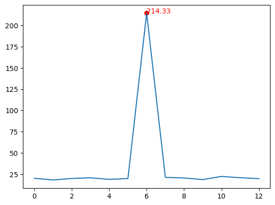

import numpy as numpy
import matplotlib.pyplot as pltOutlier Detection with the 3-sigma Rule
Python implementation
In this application we study how to detect outliers from a time-series (i.e. a one-dimensional signal), using the 3-sigma rule.
The 3-sigma rule is simple:
Any value which is more than \(3 \sigma\) away from the mean value is an outlier.
First, we need to import some libraries in Python
Suppose we have the following data series.
In Python, with [ ] we create a list of objects. This list is then converted to a numpy array, which is similar to a Matlab array.
A numpy array always has the attribute shape which indicates the shape of the data, e.g. the dimensions and length along each dimension.
data = np.array([20.1, 18.2, 19.9, 20.7, 18.9, 19.8, 214.33, 21.2, 20.5, 18.6, 22.3, 20.8, 19.7])
data.shape(13,)If you see the shape (13,) above, this means your data array has a single dimension of size 13, i.e. it is a vector with 13 elements.
Let’s compute the mean and the standard deviation of the data, using the functions: - numpy.mean() - numpy.std() - numpy.var() computes the variance (i.e. standard deviation squared) - We can use the shorthand notation np, since we imported numpy as np.
mean = np.mean(data)
stddev = np.std(data) # ToMe: check ddof
var = np.var(data) # We don't really need it, it's just for showing
print(f"Mean = {mean}, standard deviation = {stddev}, variance = {var}") # Use f-stringsMean = 35.002307692307696, standard deviation = 51.77831357057719, variance = 2680.9937562130176Now let’s check which values are more than \(3 \sigma\) away from the mean, by checking if \(|x - \mu| > 3 \sigma\) for every value \(x\).
numpy.abs() does the absolute value of a number or array.
The resulting outliers is an array of the same shape as data, because of broadcasting rules: - data is an array - data - mean is an array - a scalar, which produces an array of same size as data, subtracting from each element the scalar value - np.abs() computes the absolute values, the shape stays the same (an array) - np.abs(...) > threshold is an array compared to a scalar, which produces an array of same size, comparing each element with the scalar
# Set the threshold for outliers
threshold = 3 *stddev
# Detect outliers
outliers = np.abs(data - mean) > threshold
print(outliers)[False False False False False False True False False False False False
False]Finally, let’s do some plotting magic, using the matplotlib library (imported as plt).
plt.plot()works similar to Matlab’splot(), it draws a signalplt.scatter()places red circles at the locations of the outliersplt.text()places text at given locations
# Display the time series data with outliers
plt.plot(data)
plt.scatter(np.where(outliers)[0], data[outliers], color='red')
# Label the outliers
for i in range(len(data)):
if outliers[i]:
plt.text(i, data[i], str(data[i]), color='red')
plt.show()
Matlab implementation
Below is the same program, written in Matlab.
% Calculate the mean and standard deviation of the data
meanValue = mean(data);
stdDev = std(data);
% Set the threshold for outliers
threshold = 3 * stdDev;
% Detect outliers
outliers = abs(data - meanValue) > threshold;
% Display the time series data with outliers
plot(data);
hold on;
% Mark the outliers on the plot
scatter(find(outliers), data(outliers), 'ro');
hold off;
% Label the outliers
for i = 1:length(data)
if outliers(i)
text(i, data(i), num2str(data(i)), 'Color', 'red');
end
end